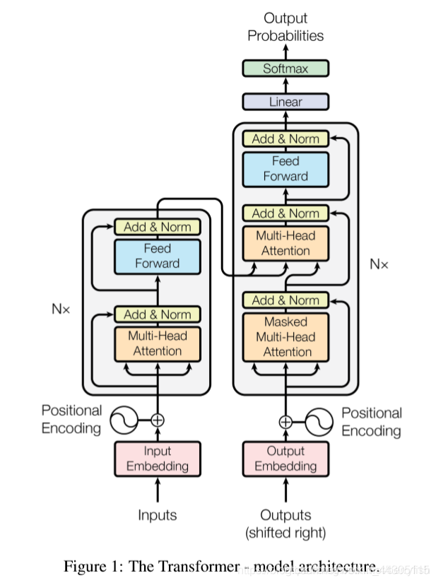

过去的生意和业务特点：业务规模大，我们通常是需要十几个程序来合作完成。有做数据库的，接口的，第三方API的，支付系统的，还有搞小程序等等，这些程序员组成一个小团队。
现在的玩法：业务规模小，只需要几个算法工程师，或者公司里请一个AI科学家，就可以把这些事全干完了，一般的程序员的薪资肯定是要降低的，甚至一部分程序员会被开除。
过去的软件，刚出来的时候是不收费的，甚至还有补贴用来吸引用户，等到用户的基数很大的时候，达到了几千万，甚至几个亿用户数，然后开始打广告，做一些收费服务，到这才开始考虑如何变现。
现在的产品是做出来就收费，最多给用户几次试用机会，用完之后就收费。
我们最熟知的ChatGPT到底是什么，算法工程师到底在干嘛
我可以这样讲，所有的AI模型，其理论基础都是Transfomer基座大模型，这是一个自回归模型。
在2017年的时候，Google发表的一篇论文Attention Is All You Need ，掀起了时代的变更浪潮，其中就讲了注意力机制，自回归模型。
OpenAI就是在这个基础上（ChatGPT的母公司），做出了举世瞩目的产品ChatGPT，可以说，这篇论文是梦开始的地方。
现在我简单讲讲，这个模型到底是怎么工作的，然后才能进入后续的讨论。
先来看这幅世界名画，这幅画的出处就是Google的那篇论文。

左边的彩色块儿，是编码器（Encoder），它的主要任务是处理输入。我们输入一串序列A={a1,a2,a3…an},编码器就会把这个序列映射成另一个序列B={b1,b2,b3…bn}
这个A序列是我们的原始输入，就是我们的数据集，我们要训练这个模型所采集的数据集，B序列是对这个A序列的映射，这个映射过程中，我们要将原始输入序列进行一个处理，简单来说，就是用数字编码，把A序列中每一个字进行数字编码，这个编码中我们要记录哪些字对于一句话是最重要的，哪些字对语义的理解影响最大，还要记录字与字之间的顺序。
如果同样的三个字：猫上树。我们讲这三个字作为输入，不记录这句话中每个字的顺序，那么在输出的时候可能会输出树上猫这样的结果，这个结果显然不是我们想要的。
OpenAI在这方面是怎么处理的呢，他们将每句话，逐字切割，形成一个个不可分割的小单元（token），然后进行编码。
右边的块就是解码器（Decoder），它的主要任务就是根据输入和序列，进行生成。这其中有一个自回归 的生成策略，用于逐步地生成序列数据。
自回归模型的基本思想是，在生成每个序列元素的时候，会依次考虑之前已经生成的元素，然后根据这些已经生成的内容来计算下一个元素的条件概率分布，然后选择最有可能的下一个元素作为生成序列的下一个元素。
就是说，同一个提词，GPT会生产很多不同的关于这个提词的内容，但是这些内容与内容之间应该怎么组织，才能更加通顺，更加易读，这里用到的方法就是自回归模型，它使得每生成的数据都与之前已经生成的数据相关联。
看这个图，就可以发现，左边的彩色块儿的输出来到了右边的彩色块儿，也就是说，编码器的输出作为解码器的输入的一部分，那么解码器的输入还有一部分来自图中下方的Outputs(shifted right)，这个就是之前已经生成的元素。
目前，不管是BERT模型，还是GPT模型，都是Transformer模型这一套，或者其变种。
我们再看图，左边的彩色块儿和右边的彩色块儿的旁边都有一个Nx 的标记，这个Nx 的意思就是几层，我们对一组输入要进行几次同样的计算，OpenAI的做法就是N=6，进行6次计算。
大致讲了一下每个功能块儿在干嘛，我们不深入其中的核心算法，设计理念，现在呢，我们讲一下，大部分的算法工程师在AI方面的工作是干嘛。
一般来说，现在的公司，要做AI转型，在业务方面接入AI，就需要算法工程师，而算法工程师是每天关注世界AI方向的进展，天天看论文，看别人是怎么做的，是怎么调参数的，然后自己试着调参数或者试着设计自己的东西。
大部分算法工程师要调的参数，其中之一是刚才说的Nx 这个计算的反复次数是多少次，可以是6次，也可以是8次，增加Nx的值可以增加模型的复杂性和表达能力，因为更多的层可以使得模型更深，能够学习更多的抽象特征和长距离依赖关系。这对于处理复杂的自然语言处理任务或其他序列数据任务来说通常是有益的。当然，太高的话，导致的计算复杂度和资源的需要会增加，所以要保持一种平衡。太小的话呢，模型就欠拟合，无法很好的找到数据规律和模式。
要根据具体的场景和数据集，算法工程师来进行调整，来找到最适合的模型大小和N值。
另一个就是前面说提到的数字编码，我们对于一个token（最小不可分割单元），需要几位数字来描述呢，这是算法工程师要根据实验来调整的。OpenAI是512个。
大部分算法工程师做的工作就是微调（fine-tuning），为什么要做这些？
我们有了ChatGPT，这是一个通用大模型，但是当其运用到垂直领域的时候，它的表现就不是那么好了。
（垂直领域是指特定的狭窄、专业化的领域或行业。在信息技术和自然语言处理中，我们经常将任务或应用分为广泛领域（例如通用自然语言处理、通用计算机视觉）和垂直领域（特定专业领域）两类）
比如说在法律场景，医疗场景，心里咨询场景，ob混淆场景等，通用大模型的表现是不够令人满意的，我们就需要做出一些调整（fine-tuning），使其对问题的回答，能够更加契合特定的场景下，我们都知道，经常出现同一个问题，在不同的专业人士的回答中，答案是不一样的。所以我们需要微调。
好了，讲了这么多，我们大概知道了，大部分的算法工程师所做的工作是什么，你会发现，这些工作无非就是微调（fine-tuning），为什么不说我们要重新做一个大模型出来呢，而是基于同样的基座模型，进行微调呢。
其实，现在的基座大模型，已经非常强大了。
去年，OpenAI的GPT3.5发布，还没有人机对话窗口，到了年底，出来了人机对话窗口，然后便火爆全球，到了春节前后，火到了国内。GPT从3到3.5，再从3.5到4。每一步都是很好的跨越。但是，真正让人震撼的是3到3.5的跨越（每一个进步，可能对于普通人来说都很震撼，但是对于业内的人来说，最震撼就是3.5到4的跨越），这中间OpenAI到底做了什么呢，其实无非就是做了大量的微调（fine-tuning），因为基座大模型已经很强大了，强大到不需要我们再去改变它，再去创造一个新的模型。而只需要少部分AI科学家，去研究这些基本的模型理论，需要大量的算法工程师去做微调（fine-tuning）。
知道这些后，我们怎么选择
首先，普通程序员是被干掉的第一批人，（哈哈，程序员成功的干掉了程序员）。其实不管什么行业，我们可以将这些领域分为确定性系统和非确定性系统领域。（这是我自己瞎划分的，之前在学上海大学的机器人课程的时候，学到的确定性系统）
什么是确定性系统：可以在特定条件下产生高度准确和可预测结果的领域。
反过来，非确定性系统就是不可以在特定条件下产生高度准确和可预测结果的领域。
哪些领域是确定性系统呢，我们从AI展露头角的第一步来看，围棋是不是确定性系统？
围棋肯定是确定性领域，不然也没有AlphaGO Zero的诞生，何为Zero，就是0的意思，就是无人能敌的意思。
不卖关子了，我举例一些属于确定性系统的领域。
自动驾驶技术是典型的确定性系统。除了在特定环境下，复杂交通和极端天气的出现，可能AI的处理不够令人满意，但是，AI通过采集数据，分析，判断，可以做出最合理的反应，只不过现在那种极端环境的数据采集样本很少，随着发展，以后AI的处理会越来越好。
生产制造业是确定性系统：机器人和自动化系统，在精密加工和装配领域，做的比人好多的多。
金融领域中的风险评估，交易策略优化，反欺诈和信用评估是确定性系统。AI精准的模式识别和预测，比人做出的判断更好。
那么我问了，语言翻译类工作是确定性系统吗？
大家可能觉得现在的翻译软件的盛行，同声传译的发展，便觉得这类工作是确定性系统，其实不是，语言翻译工作是非确定性系统，复杂感情分析，复杂语句的翻译，仍然需要人类来辅助。现在的AI语言翻译达到的成就，是人类专家不断的干预和修正，经历长足的发展（AI刚开始就是语言翻译的研究慢慢诞生的）的结果。
我们可以发现，即使是某些非确定性领域，AI也能够达到一定的水准。
所以，我们以后的工作，一定要选择非确定性领域，并且学好和AI配合工作的技能。以后一定是人机配合交互，来完成一定的任务，极大的提高效率。
确定性领域还有计算机程序与算法，逆向工程，统计学中的确定性判断，控制系统等等。
每一个行业，都需要顶尖人才，如果你想励志成为某一个行业里面的顶尖人才，那你的未来职业选择还是专业选择，大胆报，AI是影响不了你的，因为你是推动某一个行业发展的顶尖人才。
程序员怎么办？大部分程序员都要被AI干掉，那么我们如何成为剩下的少数程序员？
想要在AI时代，继续当程序员，其实是不难的，毕竟这时代智能的一切都是程序员建立的，我们应该思考，这个时代需要什么样的程序员？
这个问题在文章开头的地方已经有答案了：我们需要全栈工程师+AI工程师
作为一个计算机科学与工程专业的人，我想说的是，以后的计算机领域，其他专业/领域的人想要跨行进来赚钱的门槛越来越高了，行业需要底子扎实的全栈程序员，什么是底子扎实，就是操作系统，汇编，编译，网络，linux，高数，离散，线代等等，这些理论知识，是计算机专业的人花费数年，脱产学习要掌握的东西，什么是全栈，就是前端，后端都会，跨行进来的人很少有这样的时间和精力。过去，培训班教点数据库，教教写代码，教教算法，就可以培养出一批拿万元月薪的人，但在未来，哪怕是现在，也不太可能了，至于为什么，看完这篇文章你应该知道了。
新一波的浪潮，你想冲浪吗
我之前说了，现在所有的通用大模型都是基于同样的基座模型，不同之处就是调参，现在流行的是私有化大模型，使用开源的API，将我们自己的数据，不管是自己写的，还是收集的，都可以使用（比如OpenAI的API）API，来做我们自己的专属模型，如果使用基座模型，那么会很费力，如果使用一些已有fine-tuning的模型，我们可能会比较轻松。越来越多的公司，需要接入AI，需要做自己的私有化大模型，这就需要大量的会做fine-tuning的工程师，这项任务的学习难度不是很高，但门槛比较高，没有基础，没有背景是干不了的（未来的计算机行业，会出现越来越少的逆袭，因为人才越来越多，会技术的能力大家都一样了，但是社会又不会让每一个有同样能力的人都得到应得的地位和收入，所以就会有门槛准入）。
（这个可以参考金融领域的入行门槛，金融领域的门槛真的很高，不是你有能力就能进去的）
但是，计算机领域不会有这么高的入行门槛，但是至少会在原来的门槛上提高一点。原来的门槛是多高？
原来的门槛就是没有门槛，只要有能力，会写代码，不管你是什么背景，走的什么野路子，你都能实现月入过万。
会有一波高薪岗位出现，就是公司里面做AI调参的人，原先的算法工程师是做这些，未来，会有越来越多的程序员，学fine-tuning，帮公司做私有化大模型。那么，这些新的程序员，肯定是在原先的会写代码的，懂底层的程序员中产生，所以现在，如果还没有入行的同学，应该学好底层知识，掌握数学方法，在研究生的时候，往AI方向转。已经从业的人，可以跟随公司的培养计划，去学习。
为什么会有培养计划，因为，现在有了AI调参培训班的兴起，fine-tuning不是特别难的技术，本质就是概率问题，就是猜的问题，所以以后，这项技术会普及。现在的程序员，抓紧这个浪潮转型，会有很大的可能成为年薪百万的AI工程师，我没说笑，就是年薪过百万。想想之前的IT从业者的薪资就知道，以前，会开发的人，拿三，四十万年薪的大有人在，做的好的，年薪八，九十万，这是有很多的案例，但是未来，AI工程师相比与之前的那些普通工程师数量更少，而且对于公司来说，地位也更高，责任也更大，薪资当然更高。
至少，应该做一个会AI编程的程序员，才能在未来拥有更好的竞争力。
我的猜测，有时间，精力，钱财的人，是具备做个人私有化模型的，什么是个人私有化模型，就是别人在跟这个私有化模型进行聊天，问答的时候，不仅具备通用模型的知识储备，而且在回答的时候，充满了个人性格化，个人的情绪化。
相当于，当你在跟这个人的私有化模型进行对话的时候，你会感觉到在跟这个人本身对话。这是一个发展方向，以后这方面的需求一定不低，大部分人都需要一个针对自身特点的私有化模型，这个模型可以用来模拟自身，可以辅助发现自身的缺点，可以让本人站在第三视角来看自己到底是怎么样的人等等，同时对于亲朋好友，可能在你离开后，亲朋好友想你的时候，可以跟你的私有模型进行对话聊天。
未来浪潮涌动，祝各位能找到自己喜欢的行业。
If you like this blog or find it useful for you, you are welcome to comment on it. You are also welcome to share this blog, so that more people can participate in it. All the images used in the blog are my original works or AI works, if you want to take it,don't hesitate. Thank you !